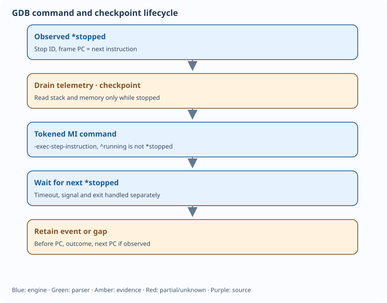

15 · GDB/MI execution and checkpoints #
Key terms #
| Term | Meaning |
|---|---|
| Program counter (PC) | The machine address of the instruction GDB is about to execute at a stop. It is not automatically an instruction that already ran. |
| MI acknowledgement | GDB saying it accepted a command (^running). A separate *stopped message says the program actually stopped later. |
| Inferior | The program GDB is controlling. |
Level 1 · Intuition #
A stopped program is observable; code running between stops is not automatically known. The GDB/MI2 driver sends commands, waits for each response and for the asynchronous stops, and inspects bounded source state.
- At a stop, the PC names the next instruction.
- An instruction attempt is recorded from that before address, plus a next address only when observed.
- Source checkpoints are selected stops, not a reconstruction of every intermediate state.


Level 2 · Command/response lifecycle #
What the engine does at a chosen pause #
- GDB starts the debug program and pauses it.
- The engine notes the function and source line.
- It reads available variables and heap bytes, within the configured budgets.
- It collects new allocator log lines.
- It assigns the stop a
stop_idthat increases as stops are observed.
Stepping one instruction #
In dual source-and-instruction mode, the engine can send -exec-step-instruction.
engine ──► -exec-step-instruction
GDB ──► ^running ← only means "I started the step"
GDB ──► *stopped ← NOW we know where execution stoppedAn InstructionEvent stores the address before the attempted step, its event number and context, and a next address only when observed.
| Situation | How it's handled |
|---|---|
| The stop never arrives | Reported differently from the whole session running out of time |
| A command reply is missing | Late text is not handed to a different command |
| Breakpoint hit | Gives the engine a stop, but that alone doesn't prove the attempted instruction finished |
| Stepping skips a library interval | A TraceGap marks what was not recorded, instead of inventing a number of missing instructions |
How a step is classified #
A step can be recorded as completed, faulted, interrupted or unknown.
What GDB does not cover #
- The engine may set bounded breakpoints to catch some callbacks, but a function appearing in source is not evidence it was called.
- GDB pauses its selected debugging session. Outside processes and unfollowed fork children are not guaranteed snapshots.
- Observing one thread does not give a complete timeline of all threads.
Worked example: a stop, then a parser query #
At source line 15 of fixtures/c/phase8b_defined.c, the audited live capture recorded:
| Item | Value |
|---|---|
| Variable | integer sum |
| Displayed value | "10" |
| Raw bytes | "0a000000" (Linux little-endian) |
| Independent check | Native GDB, in a separate run, printed sum=10 |
A later TraceStore can fetch that snapshot by its vector index, and checkpoint_summary() can page its variables. Neither the stop ID nor the value of instruction_position should be used as that vector index. See the API walkthrough.
Level 3 · Source and invariants #
| File | Owns |
|---|---|
src/gdb_mi.rs | MI command tokens, async records, stop backlog, frame parsing, selected-thread tracking, memory reads |
src/mi_parser.rs | MI syntax parsing |
src/trace.rs | The stop loop and push_snapshot |
src/recorder.rs::{checkpoint, event, gap, event_outcome} | Appends bounded canonical records and journal lines |
src/models.rs::{SnapshotObservation, InstructionEvent, TraceGap} | The serializable identities |
src/trace_parser/indexes.rs::OrderingFacts | Enables binary search only when order is verified |
{"step_index":0,"observation":{"stop_id":1,"instruction_position":0,"heap_event_count":0}}This JSON is illustrative and deliberately partial. A real ExecutionSnapshot has required file, function, call stack and variable fields. In it:
| Field | What it is |
|---|---|
stop_id=1 | A debugger stop counter |
step_index=0 | A snapshot vector index |
instruction_position=0 | A count of attempts before this stop |